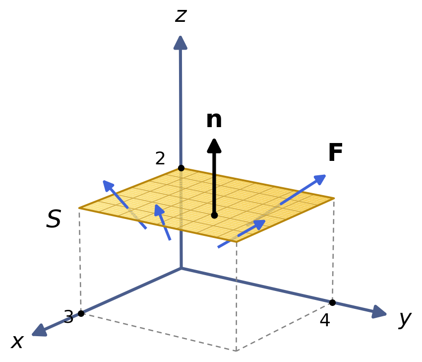

Lesson 46: Flux
The flux of a vector field \(\mathbf{F}\) across a surface \(S\) is given below.
Flux
\[
\begin{aligned}
&\iint_S \mathbf{F} \dotp \mathbf{n}\,dS \\
&\quad = \iint_D \mathbf{F}(\mathbf{R}(u, v)) \dotp (\mathbf{R}_u \times \mathbf{R}_v)\,dA
\end{aligned}
\]
Flux measures how much of the vector field passes through the surface. If \(\mathbf{F}\) is the velocity field of a fluid, the flux is the net volume of fluid passing through \(S\) per unit time.
An Example
Find the flux of \(\mathbf{F}(x, y, z) = \langle x, y, z \rangle\) across the rectangle below, with the upward orientation.
\[
\begin{aligned}
&\mathbf{R}(u, v) = \langle u,\ v,\ 2 \rangle, \\
&\qquad 0 \le u \le 3,\quad 0 \le v \le 4
\end{aligned}
\]

\[
\begin{aligned}
\mathbf{R}_u &= \langle 1,\ 0,\ 0 \rangle \\
\mathbf{R}_v &= \langle 0,\ 1,\ 0 \rangle \\
\mathbf{R}_u \times \mathbf{R}_v &= \langle 0,\ 0,\ 1 \rangle
\end{aligned}
\]
This normal points upward, as required. On the surface, z = 2.
\[
\begin{aligned}
&\mathbf{F} \dotp (\mathbf{R}_u \times \mathbf{R}_v) \\
&\quad = \langle u,\ v,\ 2 \rangle \dotp \langle 0,\ 0,\ 1 \rangle \\
&\quad = 2
\end{aligned}
\]
\[
\begin{aligned}
\iint_S \mathbf{F} \dotp \mathbf{n}\,dS &= \int_0^3 \int_0^4 2\,dv\,du \\
&= 24
\end{aligned}
\]